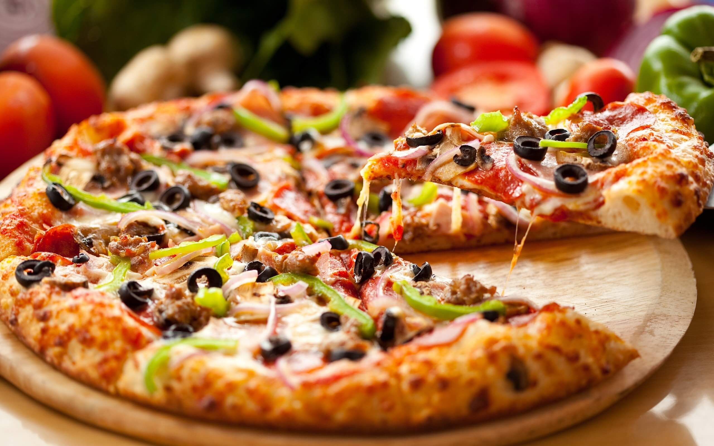

Pizza

Description
Pizza is a dish of Italian origin consisting of a usually round, flat base of leavened wheat-based dough topped with tomatoes, cheese, and often various other ingredients (such as anchovies, mushrooms, onions, olives, vegetables, meat, etc.), which is then baked at a high temperature, traditionally in a wood-fired oven.[1]
The term pizza was first recorded in the year 997, in a Latin manuscript from the southern Italian town of Gaeta, in Lazio, on the border with Campania.[2] Raffaele Esposito is often credited for creating modern pizza in Naples.[3][4][5][6] In 2009, Neapolitan pizza was registered with the European Union as a traditional speciality guaranteed dish. In 2017, the art of making Neapolitan pizza was added to UNESCO's list of intangible cultural heritage.
Ingredients
- ½ pound ground beef
- 1 medium onion, diced
- 1 clove garlic, minced
- 1 tablespoon chili powder
- 1 teaspoon ground cumin
Steps
- Preheat the oven to 350 degrees F (175 degrees C). Coat 2 pie plates with non-stick cooking spray.
- Place ground beef, onion, and garlic in a skillet over medium heat. Cook until beef is evenly browned and crumbly, 5 to 7 minutes. Drain and discard grease. Season beef with chili powder, cumin, paprika, salt, and pepper.
- Lay one tortilla in each pie plate, and cover with a layer of refried beans. Spread 1/2 of the seasoned ground beef over each one, and then cover with a second tortilla. Bake in the preheated oven until tortillas are crisp, about 10 minutes.
- Remove pizzas from the oven and set aside to cool slightly. Then spread 1/2 of the salsa over each top tortilla. Cover each pizza with 1/2 of the Cheddar and Monterey Jack cheeses. Place 1/2 of the tomatoes, 1/2 of the green onions, and 1/2 of the jalapeño slices onto each one.
- Return pizzas to the oven and bake until cheese is melted, about 5 to 10 more minutes. Let pizzas cool slightly before slicing each one into 4 pieces.